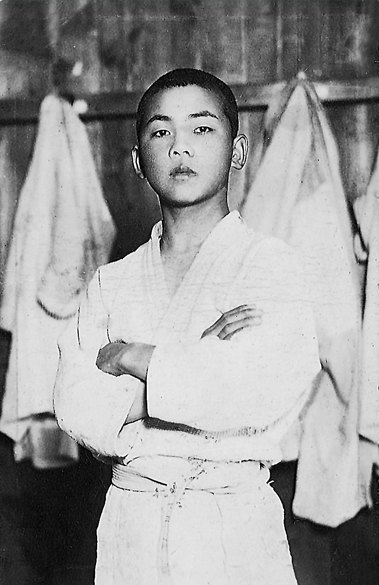
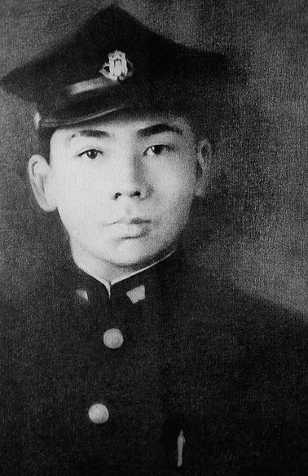
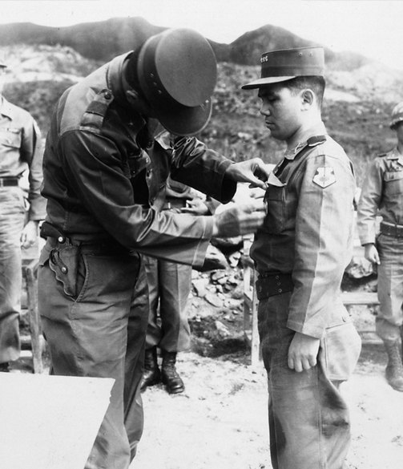
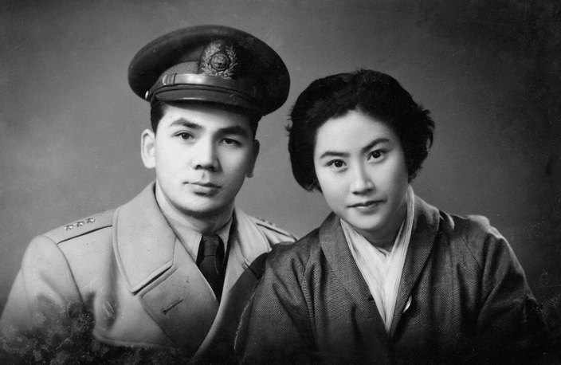
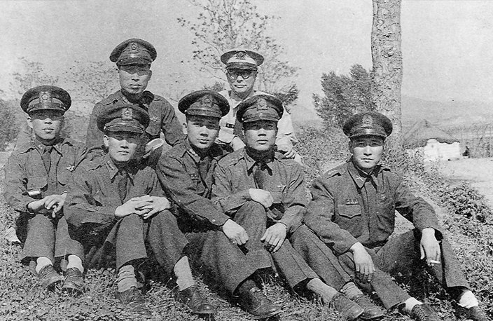
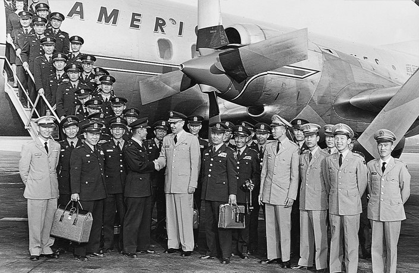

임랑리에서 태어나 일본에서 자랐고, 광복 뒤 육군사관학교를 거쳐 6·25전쟁과 군의 요직을 지나며 스스로를 단련한 시기.
- 1927
경남 동래구 장안면 (현 부산시 기장군 장안읍) 임랑리에서 박봉관(父)과 김소순(母)의 6남매 중 장남으로 출생(음력 9월29일)
- 19325세
아버지 박봉관 도일.
- 19336세
어머니와 도일. 이후 일본에서 유년시절, 학창시절을 보내며 성장.

일본 중학교 시절 - 194518세
와세다대 기계공학과 입학.

와세다대학 입학 무렵의 박태준 - 194619세
와세다대 기계공학과 2년 중퇴.
- 194821세
부산 국방경비대 훈련 중 조선경비사관학교(육군사관학교) 6기 생도로 선발. 제2중대장으로 탄도학을 강의하는 박정희와 초면. 6개월 단기과정 수료 후 육군 소위로 임관(7월 28일).
- 195023세
6ㆍ25전쟁 발발. 미아리에서 한강 이남으로 철수하라는 명령을 받고 후퇴, 8월에 포항 형산강전투 참전. 이후 북진하여 청진까지 올라갔다가 1ㆍ4후퇴 대열에 오름.
- 195326세
전쟁 중에 충무무공훈장, 은성화랑무공훈장, 금성화랑무공훈장 받음. 휴전 후 육군대학 입교.

무공훈장을 받는 박태준 - 195427세
육군대학 수석졸업 후 육사 교무처장 부임, 12월 20일 장옥자와 결혼.

신혼시절의 박태준 부부 - 195528세
육군 대령으로 진급
- 195629세
국방대학원 입교. 수료 후 국방대학원 국가정책수립담당 제2과정 책임교수 부임. 11월 국방부 인사과장으로 전임.

국방대학 교수 시절의 박태준 (앞줄 가운데) - 195730세
10월 박정희 장군(1군단 참모장)과 재회.
- 195831세
25사단 71연대장으로 국군의 날 시가행진 부대 지휘. 육군본부 인사처리과장 부임.
- 195932세
도미시찰단장으로 미국 방문.

박태준(앞줄 맨 가운데)이 인솔한 도미시찰단이 미국 공항에 내린 모습 - 196033세
부산군수기지사령부 사령관 박정희의 인사참모. 박정희 좌천 후 두 번째 도미. 미국 육군부관학교 3개월 연수.
※ 전 시기를 한 번에 보려면 전체연보를 이용하십시오. 이 시대의 사진 6장은 구 홈페이지 시대별 연보 페이지의 원본 이미지입니다.